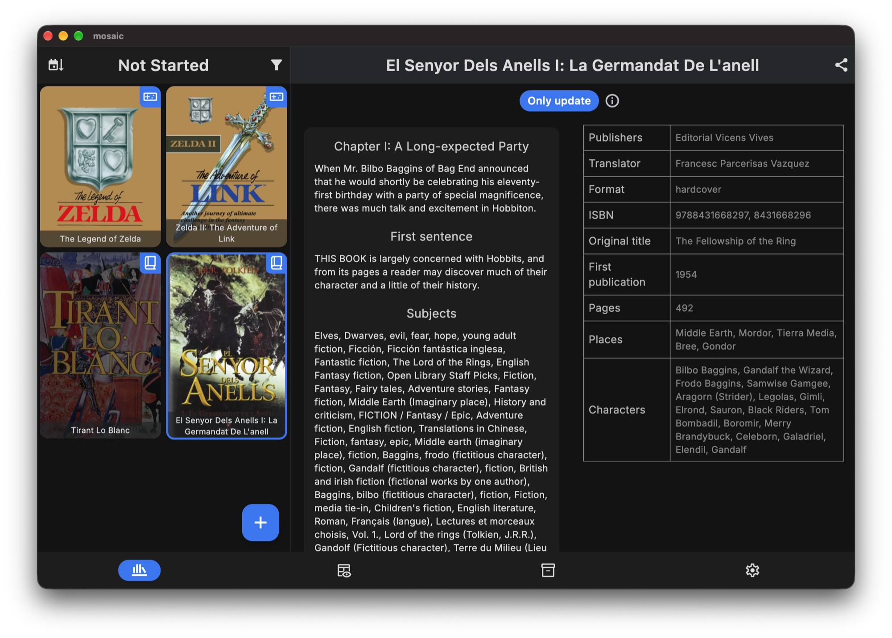
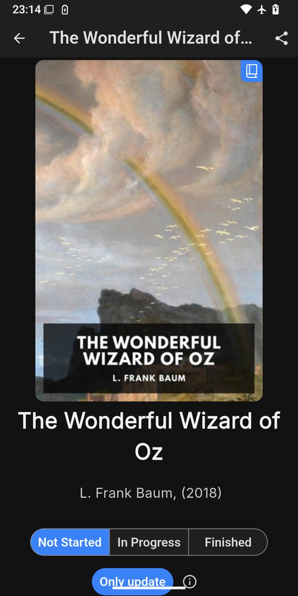

Mosaic
Aplicación de gestión del ocio hecha con Flutter, para catalogar videojuegos y libros en un solo lugar: búsqueda en bases de datos en línea, estado de progreso y cuadrícula en cascada con las portadas. Todos los datos se guardan en el dispositivo, sin cuenta.
Empezó como proyecto final del curso de Flutter (diciembre de 2025), desarrollado por mí sin ninguna herramienta de IA, y desde entonces ha seguido creciendo.
Vídeo de la entrega (diciembre de 2025)
Grabado al cerrar el curso, antes de que el proyecto siguiera creciendo.
Ficha rápida
| Campo | Valor |
|---|---|
| Rol | Diseño y desarrollo propio |
| Año | 2025–actual |
| Origen | Proyecto del curso de Flutter (diciembre de 2025) |
| Plataformas | iOS, Android, macOS |
| Tecnología | Flutter (Dart), Provider, Hive CE |
| Estado | Proyecto personal, código abierto |
| Código | github.com/ovilaro/mosaic |
| Presentación | PDF, 5 páginas |
Contexto
- El problema — el poco tiempo libre acaba en scroll infinito y el backlog no deja de crecer.
- La propuesta — una app para gestionar el ocio que queremos consumir: qué tenemos pendiente, qué tenemos a medias y qué hemos acabado.
Funciones
- Buscar y añadir — juegos vía IGDB y libros vía Open Library.
- Seguimiento del progreso — Sin empezar, En curso o Acabado.
- Cuadrícula en cascada con las portadas de la colección.
- Filtros por categoría (juegos, libros o ambos), con preferencias independientes por pestaña.
- Ordenación por fecha de alta o de modificación, ascendente o descendente.
- Ficha de detalle con portada, descripción y tabla de metadatos.
- Compartir la ficha con la imagen de portada.
- Temas claro y oscuro — blanco, negro o siguiendo el dispositivo.
- Accesibilidad — etiquetas en la barra de navegación para lectores de pantalla.
- Offline-first — datos locales con Hive CE, sin cuenta.
- Diseño adaptable — a partir de 900 px de ancho, la cuadrícula y el detalle se muestran lado a lado.
Método
Hice el curso de Flutter para aprender y el proyecto final fue Mosaic, sin ningún agente de por medio. Al terminarlo quise aprender programación agéntica y usé Mosaic como campo de prácticas: el objetivo era aprender a usar agentes, y la mejora de la app vino de rebote. Desde entonces el proyecto se lleva así: un documento de convenciones en el repositorio, AGENTS.md, describe la arquitectura, el modelo de datos, el tema, las reglas de las API y el catálogo de widgets, y cualquier sesión empieza con el mismo contexto y las mismas reglas en lugar de un encargo improvisado.
- Convenciones en el repositorio —
AGENTS.mdestá en la raíz desde abril de 2026 y se ha ido revisando con el proyecto. - Reglas duras — los archivos generados (
.g.darty el esquema de Hive) no se tocan a mano: cualquier cambio de modelo pasa porbuild_runner. - Trabajo hecho con este flujo — migración de Isar Community a Hive CE (que desbloqueó
build_runner2.15.1 → 2.16.1), sustitución de CocoaPods por Swift Package Manager en iOS y macOS, y toolchain al día (Flutter 3.47.5, AGP 9.1, Gradle 9.3.1, Kotlin 2.4).
Escrito por mí; los agentes, después
Mosaic es el proyecto final del curso de Flutter (diciembre de 2025) y lo desarrollé yo, sin ninguna herramienta de IA. Al terminar el curso empecé a aprender herramientas agénticas por interés propio y las practiqué con la app. Desde abril de 2026 las sesiones son agénticas: yo defino el problema y las reglas, el agente propone el cambio y yo lo reviso, lo pruebo y lo commiteo. Ningún cambio llega al repositorio sin esa revisión.
Decisiones técnicas
- Hive CE en lugar de Isar — Isar Community prácticamente había dejado de mantenerse y me bloqueaba las actualizaciones de Flutter. La migración fue decisión mía y la hice rápidamente con ayuda de la IA; la app aún no tenía datos en producción, así que no había nada que perder. El resultado: actualizaciones de Flutter desbloqueadas y
build_runneral día (2.15.1 → 2.16.1). - Swift Package Manager en lugar de CocoaPods — CocoaPods está en mantenimiento y su registro se congela el 2 de diciembre de 2026; Flutter ya usa Swift Package Manager por defecto. Migré el proyecto para no quedarme sin actualizaciones de dependencias. El resultado: builds nativos en iOS y macOS, sin pods por medio.
Capturas
Capturas de la entrega (diciembre de 2025)


Capturas actuales
Las dos capturas anchas son la versión de macOS.



